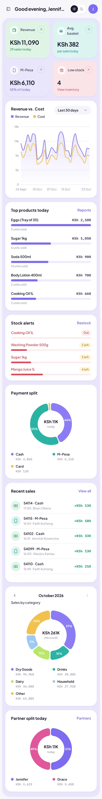

Savannah Minimart
Point of Sale
A cloud-backed point-of-sale system for a minimart in Kenya. It runs in the browser on any device, takes M-Pesa, keeps selling when the internet drops, and prints receipts on a thermal printer.
- My role
- Database, backend, frontend, hardware
- Client
- Savannah Minimart, Kenya
- Users
- Owner, managers, cashiers
- Status
- Live
The Problem
The shop ran on paper. Sales, stock and the books were all tracked by hand, and every total meant a manual calculation, so the owner had no live view of stock or takings. Cashiers needed a fast till that works with a barcode scanner, and the internet in the shop isn't always reliable. Money and stock also had to add up exactly, for every cashier and every partner in the business.
What I Built
- Register: search or scan products (USB barcode scanner), discounts capped by role, VAT, and cash with change, M-Pesa (Pochi la Biashara) or card payments.
- Offline mode: sales queue on the device when the connection drops and sync automatically when it returns, credited to the cashier who rang them up.
- Receipts and cash drawer: 80mm thermal receipts print on every sale, and the cash drawer opens through a small local printer bridge.
- Inventory: products, categories and stock batches with low-stock alerts, restocks and an audit trail for every adjustment.
- Owner dashboard and reports: revenue against cost, sales by category, top products, close-of-day Z-reports, and partner profit splits with payouts.
- Staff and roles: owners, managers and cashiers each see only what they need. Cashiers get their own dashboard with no cost or profit figures.
Key Decisions
- Replace the paper books, not just the till. The real cost of paper was the manual arithmetic, so stock levels, daily totals, profit and partner splits are all calculated automatically from each sale. Nobody has to add up a column by hand.
- Business rules live in the database. Checkout, void and un-void, FIFO stock allocation and partner reports are PostgreSQL functions, so totals and stock stay consistent whichever device rings up the sale.
- Permissions enforced by Row Level Security, not just by hiding buttons. Even if someone bypasses the interface, a cashier can't read profit figures or edit stock.
- Offline-first as an installable PWA. The app caches itself with Workbox and stores the product list and pending sales in IndexedDB, so the till keeps working without internet.
- A local bridge for hardware. Browsers can't talk to USB thermal printers directly, so a small Node.js server on the shop PC sends ESC/POS commands to the printer and cash drawer.
- Realtime updates. Supabase Realtime pushes new sales to every open dashboard, and staff invites go out through a Supabase Edge Function.
Tech Stack
The Outcome
The shop now runs on the system day to day. Sales, calculations, stock, tracking and reports that used to be done by hand on paper all happen automatically.
"It has made daily business operations easier, simplifying sales, calculations, stock management, sales tracking and reports. It has improved accuracy, saves time and brought about business efficiency."
The Dashboard
A live analytics dashboard. Unlike my other projects, the data here comes from the till, sale by sale, so most of what the owner sees is calculated rather than typed in, and new sales appear on every open dashboard as they happen. Cashiers get a separate, simpler dashboard for running their shift.


Owner view, sample data. Click a screenshot to enlarge it.